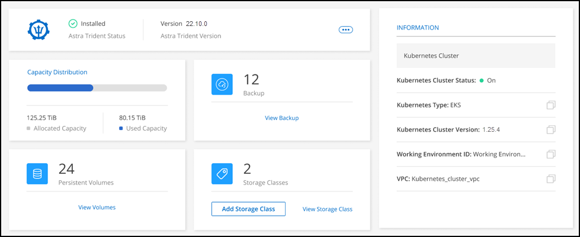
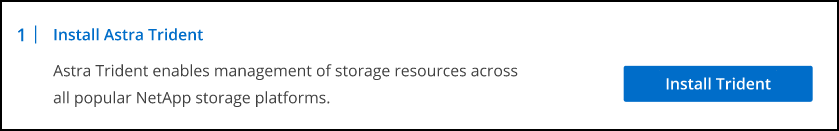
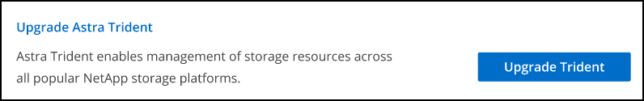
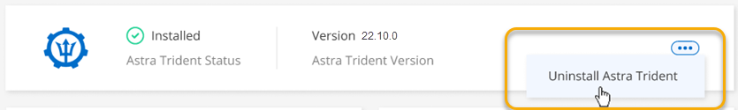

Inizia subito
Inizia subito
Gestire Astra Trident
 Suggerisci modifiche
Suggerisci modifiche
Dopo aver aggiunto un cluster Kubernetes gestito a Canvas, è possibile utilizzare BlueXP per confermare un'installazione di Astra Trident compatibile, installare o aggiornare Astra Trident alla versione più recente o disinstallare Astra Trident.
Astra Trident in BlueXP
Dopo aver aggiunto i cluster Kubernetes a BlueXP, puoi gestire Astra Trident e i cluster Kubernetes dalla pagina panoramica. Per aprire la pagina panoramica, fare doppio clic sull'ambiente di lavoro Kubernetes in Canvas.

Versioni supportate di Astra Trident
È necessaria una delle quattro versioni più recenti di Astra Trident implementate utilizzando l'operatore Trident, manualmente o utilizzando la mappa Helm. Se Astra Trident non è installato o è installata una versione incompatibile di Astra Trident, il cluster mostrerà che è necessario eseguire un'azione.

|
Astra Trident implementato con tridentctl non è supportato. Se hai implementato Astra Trident con tridentctl, Non è possibile utilizzare BlueXP per gestire i cluster Kubernetes o disinstallare Astra Trident. È necessario E reinstallare Astra Trident manualmente utilizzando "L'operatore Trident" O in BlueXP con Installare o aggiornare Astra Trident.
|
Per ulteriori informazioni su Astra Trident, vedere "Documentazione di Astra Trident".
Installare o aggiornare Astra Trident
Puoi rivedere lo stato e la versione dell'installazione di Astra Trident nella pagina panoramica. Se Astra Trident non è già installato o se è installata una versione incompatibile, è possibile gestirla utilizzando BlueXP.
-
Fare doppio clic sull'ambiente di lavoro Kubernetes in Canvas o fare clic su Enter Working Environment.
-
Se Astra Trident non è installato, fare clic su Installa Trident.

-
Se è installata una versione non supportata di Astra Trident, fare clic su Upgrade Trident (Aggiorna Trident).

Non è possibile utilizzare BlueXP per eseguire l'aggiornamento da Astra Trident versioni precedenti alla 21.01. Per eseguire l'aggiornamento da una versione precedente, fare riferimento a. "Eseguire l'upgrade con l'operatore". -
È installata l'ultima versione di Astra Trident. È ora possibile aggiungere classi di storage.
Disinstallare Astra Trident
Se Astra Trident è stato installato utilizzando BlueXP o l'operatore Trident (Helm o manualmente), è possibile disinstallarlo utilizzando BlueXP.
|
|
|
La disinstallazione di Astra Trident con BlueXP non rimuove tutti i servizi Astra Trident applicati durante l'installazione. Per rimuovere completamente Astra Trident, incluse tutte le definizioni di risorse personalizzate (CRD) create, fare riferimento a. "Eseguire la disinstallazione utilizzando l'operatore Trident"
-
Dalla pagina panoramica, selezionare i puntini di sospensione e Disinstalla Astra Trident.

-
Selezionare Disinstalla per confermare e disinstallare Astra Trident.
Astra Trident viene disinstallato dall'ambiente di lavoro. Puoi reinstallare Astra Trident in qualsiasi momento.